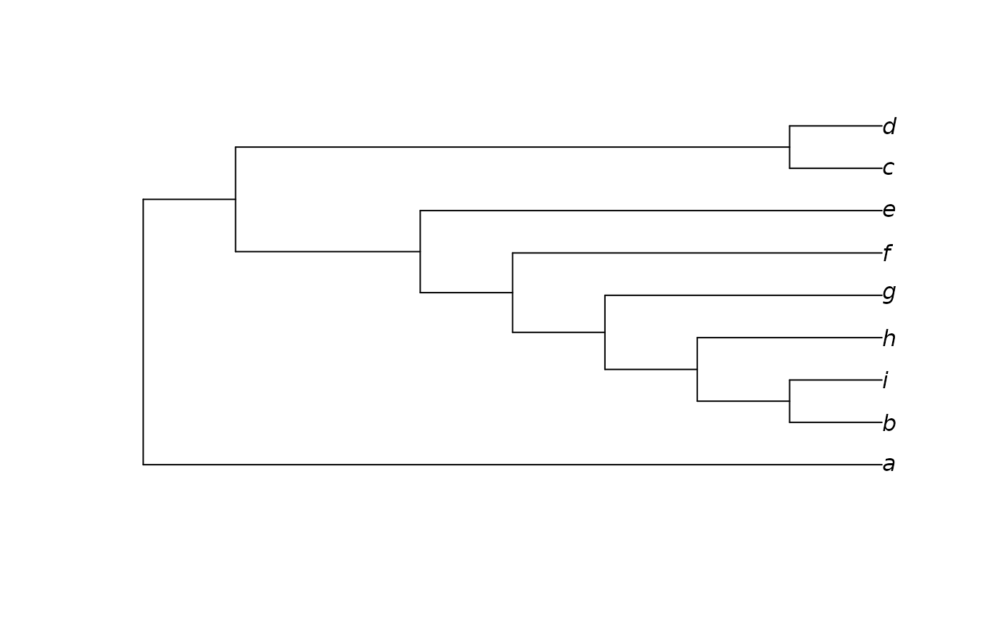

Modify a tree such that it matches a specified constraint.
This is at present a somewhat crude implementation that attempts to retain
much of the structure of tree whilst guaranteeing compatibility with
each entry in constraint.
Arguments
- tree
A tree of class
phylo.- constraint
Either an object of class
phyDat, in which case returned trees will be perfectly compatible with each character inconstraint; or a tree of classphylo, in which each node inconstraintwill occur in the returned tree. See vignette for further examples.- toAdd
Character vector specifying taxa to add to constraint.
- asPhyDat
Logical: if
TRUE, return aphyDatobject; ifFALSE, return a matrix.
See also
Other tree manipulation:
AddTip(),
CollapseNode(),
ConsensusWithout(),
DropTip(),
EnforceOutgroup(),
KeptPaths(),
KeptVerts(),
LeafLabelInterchange(),
MakeTreeBinary(),
Renumber(),
RenumberTips(),
RenumberTree(),
RootTree(),
SortTree(),
Subtree(),
TipTimedTree(),
TrivialTree
Examples
tips <- letters[1:9]
tree <- as.phylo(1, 9, tips)
plot(tree)

constraint <- StringToPhyDat("0000?1111 000111111 0000??110", tips, FALSE)
plot(ImposeConstraint(tree, constraint))